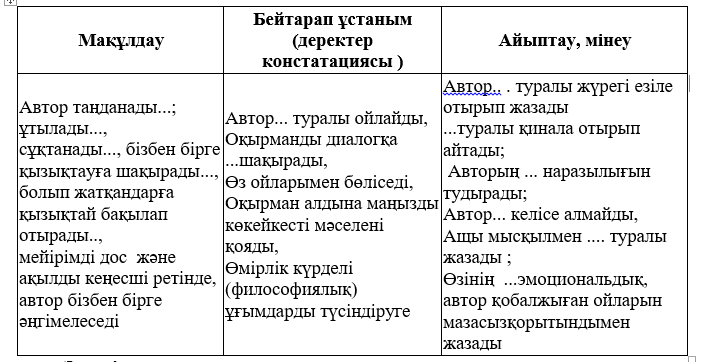

karchive
Қазақ тілі - Емтихан дайындық
@a - Kuanish Aidar [01.06.2023-17:33] |
Қазақ тілі пәні бойынша критерийлер
Фонетика: дыбыстардың тіл біліміндегі орны мен маңызын, фонетикалық ұғымдардың мәнін, дыбыстардың түрлері мен олардың жіктелуін, тіл дыбыстарының жасалу жолдарын меңгеріп, фонетикалық талдау жасай алуы;
Лексика: лексиканың тіл біліміндегі орны мен маңызын, сөздердің мағыналық топтарына қарай түрлерін, лексикалық терминдерді ажырата білуді, лексикалық талдау жасай алуы;
Сөзжасам: тілдік материалдарда лингвистикалық білімдерін қолдана білу, сөзжасамның тіл біліміндегі орны мен маңыздылығын, сөздердің жасалу тәсілдерін және олардың жасалу жолына қарай жіктелуін, түбір сөз бен туынды сөздің белгілерін анықтай алуы;
Морфология: сөз таптарының мағыналық топтарын, өзіндік белгілерін және бір-бірінен ажырата білуі, сөз таптарының қызметін түсіндіре алуы, морфологияға қатысты тілдік ұғымдардың мәнін анықтауы, морфологиялық талдау жасай алуы;
Синтаксис: сөз тіркесінің өзіне тән белгілерін, байланысу тәсілдері мен түрлерін, сөйлем мүшелері, жай сөйлем, құрмалас сөйлем түрлеріне синтаксистік талдау жасай алуы, мәтіндерге кешенді тілдік талдау жасай білуі;
Пунктуация: жазбаша қарым-қатынастарда, тыныс белгілерді қолдана білу дағдылары, тыныс белгілердің қолданылатын орындары, стиль түрлерінде атқаратын рөлін дәйектей білуі;
Стилистика: стиль түрлері мен түрлі мәтіндерді түсіне баяндау және интерпретациялай білуі, түрлі стильде мәтін құрауды, сөйлеу мәдениетінің нормалары мен шешендікке қойылатын талаптарды меңгеруі тиіс.
Эссе деген не?
Эссе дегеніміз (фр. тіл. essai -тәжірбие, лат.т. exagium – құрау ) – философиялық, әдеби, тарихи, публицистикалық, әлеуметтанулық, саяси және тағы басқа саладағы ғылыми емес, автордың жеке көзқарасын білдіретін прозалық мәтін. Эссе - жеке әсер етуді және нақты сылтау бойынша пікір ойды білдіретін кішкене көлем мен еркін композицияның шығармасы. Жанр ретінде енгізген 1580 ж. Мишель Монтень болатын, ал «эссе» сөзін бірінші рет қолданып, осы жанрда 1597 жылы Френсис Бэкон кітаптарын жазып шығарды.
Қазақ тілінің түсіндірмелі сөздігінде эссеге: «Эссе – бір нәрсенің әсерінен болатын толғаныстан туған шағын әдеби шығарма» деген анықтама берілген.
Классикалық эссе – бұл еркін тақырыпқа жазылған, көркемдік қиялдан азат қысқа көлемді шығарма. Эссенің мақсаты – әртүрлі тезистер, дәлелдер келтіре отырып, берілген тақырыпты ашу. Онда нақты айғақтар беріліп, мысал келтіріледі.
Эссе екіге бөлінеді: 1) субъективті; негізгі мақсаты – авторды жан жақты ашу, таныту. 2) объективті; негізгі мақсаты – белгілі бір ғылыми тақырып бойынша автордың көзқарасын ашу, таныту.
Эссе: Mазмұны
Мазмұны жағынан эссе келесідей болады: • философиялық, • әдеби- сындық, • тарихи, • көркемдік, • көркемдік-публистикалық • рухани-имандылық және т.б. Қалыптары бойынша эссе келесідей болады: • пікірсараптық, • лирикалық миниатюрлық, • ескертпелер, • күнделіктен жазбалар, • хаттар және басқа. Эссе бөлінеді: • сипаттамалық, • баяндамалық, • рефлексивтік, • сындық, • талдаулық және басқа.
Жазылу көлемі:
5-сынып 70-80 сөз
6-сынып 80-90 сөз
7-сынып 90-100 сөз
8-сынып 100–150 сөз
9-сынып 150-200 сөз
10-сынып 200-300 сөз
11-сынып 300-400 сөз
ЖОО –дағы студент 500 сөз немесе 1-2 беттен 20 бетке дейін.
ЭССЕ жазу барысында қатаң сақталынуы тиіс ТАЛАПТАР:
• Жеке көзқарастың көрінісі;
• Деректі дәйектер (аргументтер);
• Теоретикалық негіздеме;
• Терминдерді қолдану;
• Цитаталарды келтіру;
• Әртүрлі көзқарастарды мысалға алу;
• Логикалық заңдылықтың сақталынуы;
• Салыстыру және қорытындылау әдістерін қолдану;
• Сауаттылық (пункт., орфогр.);
Жиі кездесетін қателіктер:
1. Проблема ашылмайды;
2. Автордың жеке ұстанымы көрінбейді;
3. Теоретикалық негіздемесі жоқ;
4. Терминдерді орынсыз, сауатсыз қолдану;
5. Тым қарапайым өмірдің мысалдары көп;
6. Ауызекі сөздер, диалект, слэнг, жаргон сөздер;
7. Келтірілген мысалдар автор ұстанымына қайшы;
8. Қорытындылау, түйін шығару деген жоқ;
9. Логиканың болмауы.
Эссе жазудың нақты мақсаты қандай?
Ол:
-Белгілі мәселе бойынша өз пікірін айту және дәлелдеу;
-Сұрақ бойынша өзінің түсінігін, ойын айту;
-Оқырмандарды ақпараттандыру;
-Мәселені талқылау және шындықты табуға тырысу;
-Өзінің және оқырманның көңілін толтыру, рақатқа бөлеу;
-Көңіл-күйіңді білдіру және оқырман көңілін аудару, эмоция туғызу;
-Іс-әрекетке түрткі болу.
Сіз өзіңіздің эссеңіздің қандай нәтиже көрсететінін білгіңіз келе ме? Мұны тексерудің бірнеше жолдары бар: мәтінді дауыстап оқу, өз жазғаныңызға оқырманның көзқарасымен қарауға тырысу,ең соңында адамдардың пікірін білу.
Қорытындыға тілдік клише:
• Осылайша, жоғары баяндалғандар негізінде қорытынды жасауға болады …
• Қорыта отырып, айтқым келеді …
• Жоғары баяндалғандар негізі келесіге тіркеледі …
• оқылған мәтіннің негізінде тұжырым жасауға болады…
• Айтылғандарды қортыа отырып, айтуға болады … Бұдан … шығады
• Мен мәтін нің авторына шынымен ризашыцлығымды білдіремін, өйткені ол мені ... ойландырып тастады
• Бұл мәтін мен тағы да ... екеніне сендірді
• Қортындыда мен автордың тырысқаны бекер кетпегенін айтамын, олар менің ішкі дүниемді мәселелерді жақсы түсінуге үйретті.
• Бұл мәтін мәселеге терең үңілуге, біздің өміріміздегі маңызды нәрселерді қайта бағалауға үйретті
Ақырында эссе жазу барысында қажет болатын бірнеше кеңестер береміз:
1. Мәтіннің жанрын анықтауда сақ болыңыз: оны әңгіме немес статья деп атауға асықпаңыз, өйткені сіз қате жіберіп алуыңыз мүмкін. Мәтін, фрагмент, үзінді сөздерін қолданған дұрыс.
2. Егер сіз авторлық неологизмді қолдансаңыз, оны міндетті түрде тырнақшаға алыңыз, әйтпесе мәтінде бұл сөз грамматикалыө қате болып есептелінеді.
3. Этикалық нормалады сақтаңыз: дөрекі, балағат сөздерді қолданбаңыз
Эссені келесі жоспармен жазу керек:
● Қарастырылатын мәселемен байланысты берілген мәтіннен цитата
Өмірлік тәжірбиені қолдана отырып:
• Менің қарапайым өмірлік тәжірбиеме қарамай, осыған ұқсас жағдайды есіме түсіремін (менің досым, сыныптасым, жерлесім) …
● автор өмірбаянының, көзқарастарының,сенім-нанымының деректеріне көз салу
II. Мәселені тұжырымдау:
Мәтінде "мәселе" сөзі (немесе "сұрақ") міндетті түрде айтылуы керек.

Дәлелдер - бұл фактілер, қоғамдық өмірдің, оқиғалардың, өмірлік жағдайлардың және өмірлік тәжірбиенің, ғылыми дәлелдеулердің, ғалымдардың пікірлерге бағыттамалардың құбылысы. Әр тезистің пайдасына екі дәлел келтіргеніміз жөн: бір дәлел нанымсыздау болады, үш дәлел жанр түрінде орындалып, қысқаша және образдауға бейімделген баяндаманы күрделендіріп жібереді.
Тезистерді мағыналы әңгімеге қалай айналдыруға болады?
Жүйелі ақпарат,идеяларды нақтылайтын деректер болып, автор оларды қандай реттілікпен ұсынатынын білсе, сонымен қатар өзінің хабарламасымен қандай нәтижеге жеткісі келетінін көре білсе – тезистерді ойды мағыналы баяндауға айналдыру қажет.
Көп жағдайда ауызша және жазбаша хабарламалар үш негізгі композициялық бөлімнен тұрады: кіріспе, негізгі бөлім, қорытынды.
Оқырманды қызықтыру үшін кіріспе бөлім жанды, нақты, күшті және мінсіз (өзіндік) болуы керек. Онда оқырманға үндеу, афоризм, жалпы ой, жеке тәжірибеге сілтеме, аналогия, ассоциация, тұжырым, сұрақ, жеңіл ескертп т.б. болуы мүмкін. Кіріспе мен негізгі бөлім арасындағы қатынас сақталуы керек. Егерде эссенің жалпы көлемі 500 сөз болса, кіріспеге 50 сөз алу ұсынылады.
Негізгі бөлім тақырыптың бірізді баяндалуы болып табылады, жазылған мәселе бойынша ұсыныстар мен көзқарастарды бейнелі түрде жеткізеді, жазбаша хабарландырудың мақсаты мен бағытына сілтейтін ой желісін құрайды, дәлелдемелері мен сілтемелері бар, идеяны дәлелдемелер мен нақты мысалдар арқылы нақтылайды. Мұнда әртүрлі айқындау құралдары қолданылады.
Қорытынды бөлімде әдеттегідей қорытынды жасалады, жазылған мәселе мәні мен мазмұнын күшейтеді, автордың ойымен сәйкес келетін көңіл-күй мен сезімді анықтайды.
Эссенің түрлері
Әдебиеттегі Эссе
Әдебиеттегі Эссе – соны пікірлерге көбірек мән беріліп, оқырманды ой теңізінде жүздіретін таңдай қақтыратын, өзінше ойлап-сезіну қажеттілігін туғызатын, қаныңды қыздырып, рухани әлеміңе азық сыйлайтын, дүние құбылыстарын өткір қабылдауымен ерекшеленетін көркем туынды. Эссе табиғаты сыршыл сезімге, тіл бояуларының айрықша салтанатына, әшекейлі композицияға құрылады. Өзгеше бітімді бұл өнер туындысында эссеші интеллектуалдық байлығын, аңғарымпаздығын, жарқын, тапқыр ойлылығын, өмір саяхатындағы көрген-білетін, сезінген-түйгенін, тәжірибелерін жомарттықпен жайып салады. Эссе сипатында туған туындыларға батыл болжамдар мен өткір ұсыныстар, пікір жарыстырулар мен талас тудыратын жорамалдар, ойлар, көкейге қонымды, таным көкжиегін кеңейтуге қозғау саларлық байламдар тән.
Классикалық эссе
Классикалық эссе – бұл еркін тақырыпқа жазылған, көркемдік қиялдан азат қысқа көлемді шығарма. Эссенің мақсаты – әр түрлі тезистер,дәлелдер келтіре отырып берілген тақырыпты ашу. Онда нақты айғақтар беріліп,мысал келтіріледі.
Эссеге тақырыптардың шектеусіздігі, автордың өз тәжірибесіне негізделген жеке позицияның еркін мазмұндалуы тән. Мұнда стиль маңызды роль ойнайды. Әр түрлі эссе байқауларында (оқуға пайдаланудың алдындағы сынақтарда, сондай-ақ өзіндік шығармашы-лық байқауларда) мәселен, 500 сөздің көлемінде эссе жазу тапсырылады.Қолыңа не үшін қалам алғаныңды ең алдымен өзің түсініп ал.
Мінсіз эссе жазудың дайын ережесі жоқ және болмайды да, бірақ эссе жазу дағдыларын жүзеге асыруға көмектесетін ережелер мен нұсқаулар бар.
Ең алдымен өзіңнің хабарлайтын, жазатын, ой тол-ғайтын, талқылайтын нәрсең туралы анық білуің керек. Сондай-ақ, эссе жазуға итермелеген не нәрсе, эссені кім оқитынын түсіну өте маңызды. Оқырманның назарын өзіңе аудартатын, мүмкін болса қарсы жауап реакция-сын тудыратындай өз ойыңды, сезіміңді, көңіл-күйіңді жеткізу үшін мәнерлі, мазмұнды, күшті сөздерді дұрыс таңдай білу керек. Эссе жазатын адам үшін ең маңызды қасиет – тілді еркін меңгеруі, басқалардың сезіміне әсер ететіндей дәл, анық бейнелі етіп сабақтастыра жаза білу.
«БАҒАЛАУДЫҢ АЛТЫ ҚАҒИДАСЫ»
«Маңыздылық».
Бағалау үшін пәннің (курстың) ең маңызды, бағалауға тұрарлық күтілетін нәтижелерін таңдап алу қажет, өйткені бағалауға уақыт, күш және басқа да ресурстар шығындалады.
«Дәлдік» («Адекваттық»).
Бағалау үшін пәннің (курстың) ең маңызды, бағалауға тұрарлық күтілетін нәтижелерін таңдап алу қажет, өйткені бағалауға уақыт, күш және басқа да ресурстар шығындалады.
«Объективтік» («Дәлелділік»).
Объективтікке (тұрақтылық, беріктілік, шынайылық, адал, дәлелділік) бағалаудың нақты талаптарын (критерийлерін) таңдау арқылы жетуге болады.
«Оқудың ажырамас бөлігі».
Бағалау оқу процесінің ажырамас бөлігіне айналу керек. Басқаша сөзбен айтқанда, бақылау жұмысының өзі де үйрету әрекеттеріне жатады. Бағалау мен үйрену – біртұтас процесс.
«Жариялылық».
Бағалаудың талаптары мен тәсілдері оқушыларға алдын-ала хабарлануы керек. Баға жария түрде қойылып, оқушылар өздерінің қандай білімдері және олардың қалайша бағаланытындығын білуі керек.
«Қарапайымдылық».
Бағалау процесі мен оның формалары қолданыста қарапайым және ыңғайлы болуы керек.
Пайдаланылған еңбектер:
эссе жазуға көмекКІТАП (1).docxK. Aidar Archive - 2023.01.06 * 17:33